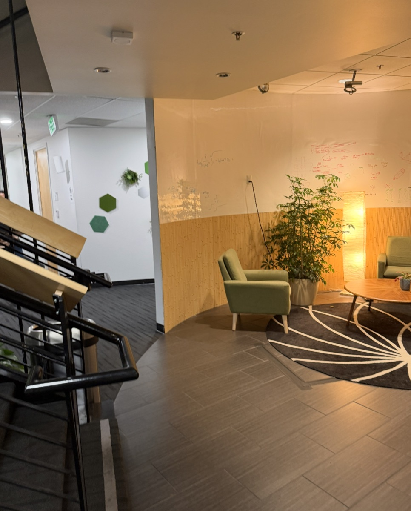
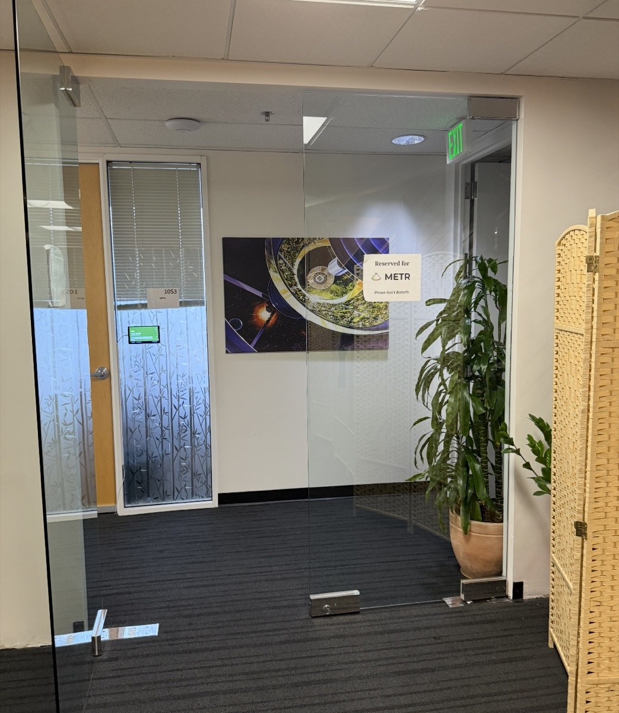

This game is a translation of an essay I wrote after visiting the offices of several AI Safety organizations in San Francisco. These people, whose entire job is being careful with AI development, only focused on improvement over insight.. The spaces were bright, well-funded, and staffed by researchers mostly in their mid-20s. And on whiteboard after whiteboard there lay benchmark results, scaling experiments, capability gains. “The space seemed to be a microcosm of the entire machine learning community at present.”


When the stakes are this high, why have we not seen more principled, theoretical approaches to building extremely powerful AI?
Carelessness will prevail because scaling and other empirics gives instant feedback ("a benchmark either rises or it does not") and that feedback becomes more top-venue papers, papers become grants, grants become salaries. Theory is difficult because it genuinely takes months before true results occur. A single early-career near miss measureably drives out researchers out of the field. This place is cutthroat. The individual choices to focus on empirics are wholly reasonable, and the combination of them will destroy society.
In the 1800s, we ran steam engines before thermodynamics existed, and sent people to tend boilers whose failure modes nobody could yet write down. The difference is that a boiler explosion ends at the factory wall, but true AGI/ASI can cause wanton death and destruction.
Under a capitalist mode of organization, research labs that can demonstrate measureable progress in a timely manner get funded, while those that lag do not. Researchers in empirical subfields get faster feedback and safer careers, and labs who incentivize this get funded. Theoretical, insightful questions will lose because mathematics does not follow the rules of product management. This disparity will result in billions of unprepared people taking on the risk of building systems that outrun our ability to understand them.
“The forms of knowledge easiest for our institutions to capitalize on may not be the forms of knowledge that are needed during times of extraordinary societal change.”
The game is not an argument that empirics are bad and theory is good. Life is never that black and white, and the best runs (like the best papers) use both holistically. It is an argument about which strategies the system lets you afford.
International Monetary Fund. “Real GDP Growth.” IMF DataMapper, World Economic Outlook, 2026.
Karger, Ezra, et al. Forecasting the Economic Effects of AI. Working Paper 35046, National Bureau of Economic Research, 2026.
Smaldino, Paul E., and Richard McElreath. “The Natural Selection of Bad Science.” Royal Society Open Science, vol. 3, no. 9, 2016.
Sutton, Richard. “The Bitter Lesson.” Incomplete Ideas, 13 Mar. 2019.
Wang, Yang, et al. “Early-Career Setback and Future Career Impact.” Nature Communications, vol. 10, art. 4331, 2019.